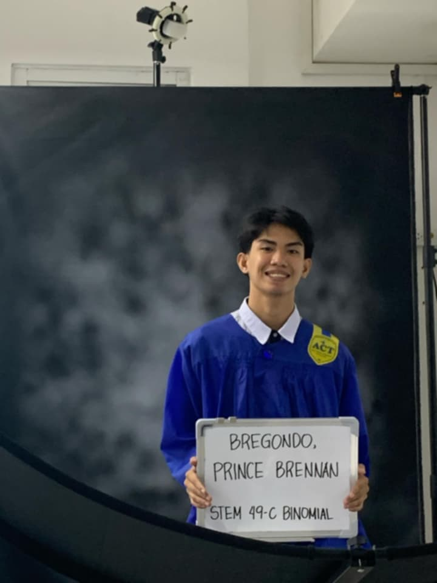

Hi, I'm Prince Brennan Bregondo BSIT-J currently studying at University of Cebu Main Campus. I am 18 Years old
and the reason why I chose Information Technology as my course is because I grew curious about how things work,
especially computers, phones, and apps we use every day. That curiousity slowly turned into passion for building,
fixing, and improving technology.
Choosing IT course for me comes as my third option, because my mom and my dad wanted me to become a Sailor or take
on a Custom course but since I have enrolled late and which I am glad for, I met this course
My interest began when I was playing a game called Roblox, and i stumbled upon inspect when i right clicked on the game page
and i saw words I've never saw before which was unclear and a mystery for me. I was 9 at that time. And that mystery became a fuel
to my passion, I started learning about HTML in youtube and I even started making my own game on Roblox platform but I wouldn't really
call it a proper coding because most things I did was change the terrain and add details through drag and put.
From then on, I continued learning coding as my hobby
It fits me because I am a curious type when it comes to the unknown tech information around me. I wanted knowledge to understand and build a foundation to guide me through my future career as an IT graduate. It fits my style of work.
In college, I want to strengthen my foundations in programming, networking, databases, and cybersecurity. My aim is to build projects that solve everyday problems—like automating tasks, building helpful websites then putting it all in my work portfolio as I aim a freelancing job or companies seeking certain skill sets that I might have.
I believe that knowledge is virtue, and virtue is knowledge and with knowledge I can persevere
I want to use my skills to make technology easier to take-in and safe for everyone.
My journey in IT is just the beginning, I am aware that I might face problems later on. Challenges and difficulties
but that wouldn't stop me to achieve my dream of graduating and achieve success.
It isn't just my course but my passion and spirit for success